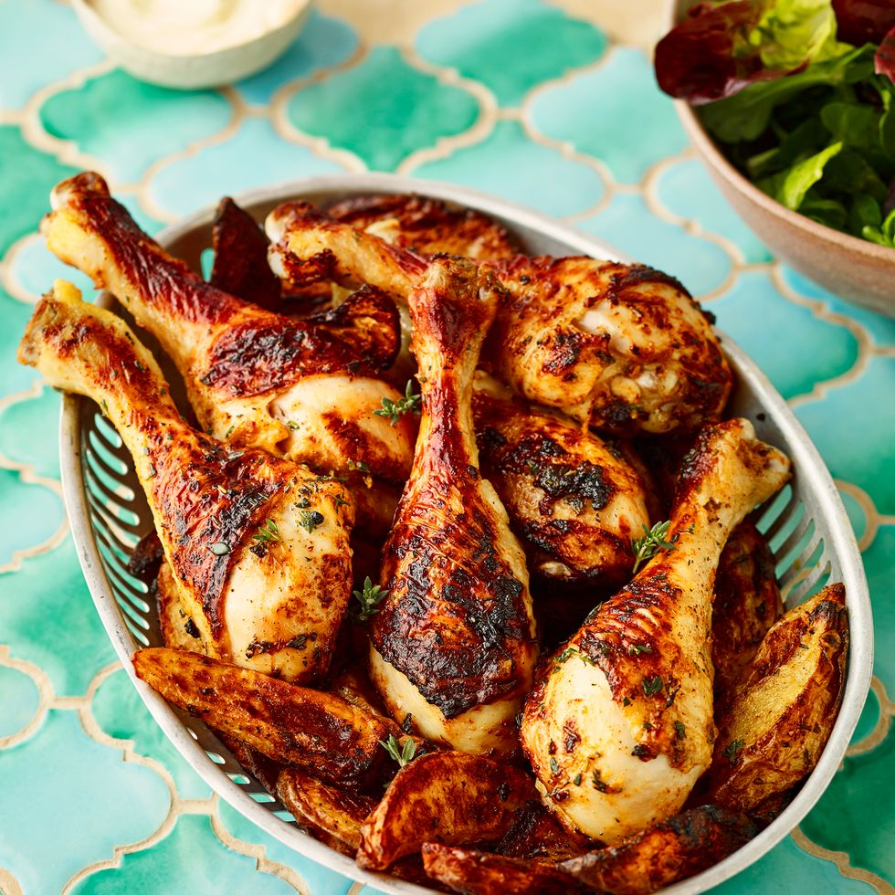

Air Fryer Sticky Chicken

The best chicken drumsticks you'll ever nibble
If you're a fan of air fryers then this
air-fryer chicken recipes is for you.
If your air fryer is a two-drawer model,
cook the potato wedges and chicken in
separate drawers. If it’s a one-drawer
or lidded model, simply arrange the
chicken on top of the potatoes.
Ingredients
- 8 chicken drumsticks
- 3 medium baking potatoes (about 600g), cut into 1.5cm wide wedges
- 1 tbsp. thyme leaves, roughly chopped
- 2 tsp. sweet smoked paprika
- 2 garlic cloves, crushed Finely grated zest and juice 1 lemon
- 2 tsp. vegetable oil
- 2 tbsp. runny honey
- Salad leaves, to serve
- In a large bowl, mix all the ingredients, except the honey and salad leaves, with plenty of seasoning, until well combined and evenly coated. Preheat air fryer to 200°C.
- Put the potatoes into the air fryer (in the crisper basket, if your model has one). Close the lid/drawer and cook for 10min. Meanwhile, add the honey to the chicken bowl and mix to coat.
- Shake/turn the potatoes, then add chicken to the air fryer and continue to cook for 15-20min, shaking/turning every 5min or so, or until both the chicken and potatoes are cooked through. Serve with salad.